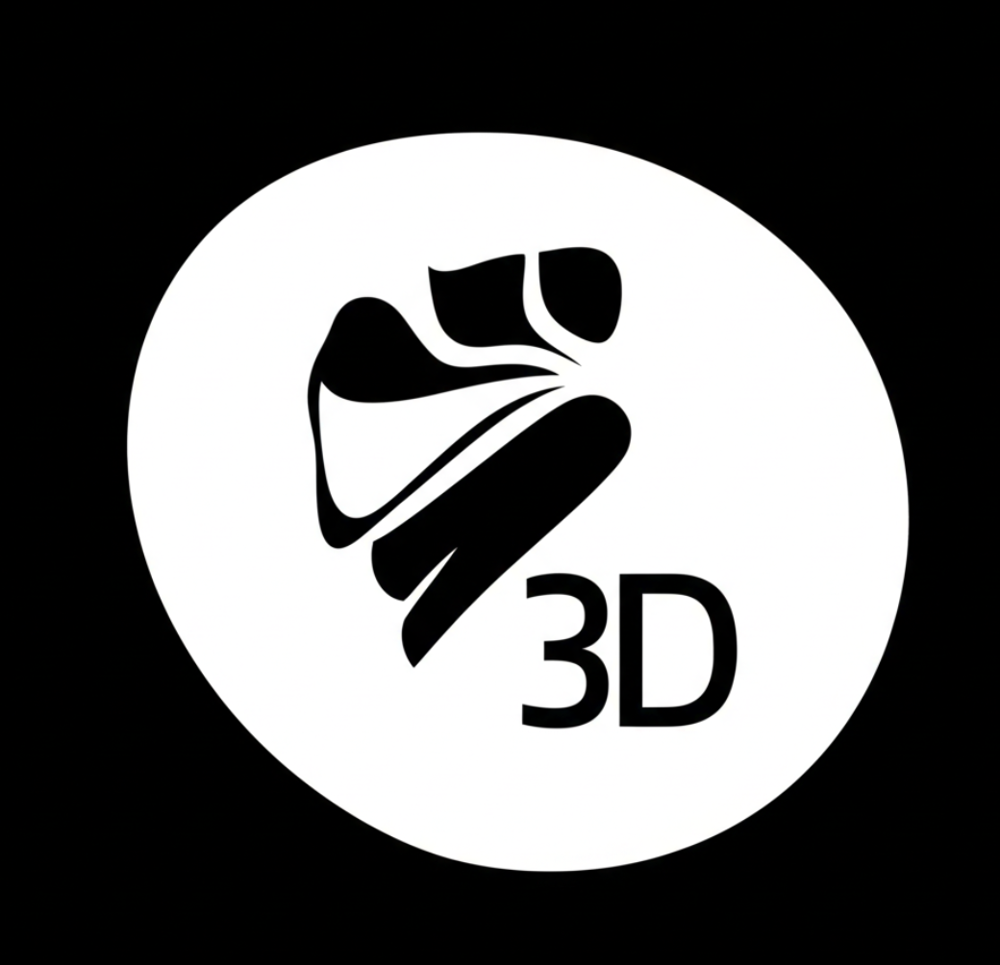

This year-long project for HSTAT's Software Engineering Program challenged us to create a website exploring current and future innovations in a field of our choosing. I delved into Media Production, developing a concept called Visi-Rec to showcase how technology could reshape the way we create and share visual content.

Imagine harnessing Hollywood-level visual effects and seamless video editing, all from a device that fits in your eye. My concept, Visi-Rec, is a revolutionary contact lens designed to record and manage calls simultaneously. It aims to simplify media production, eliminating the need for bulky hardware or complex software. With Visi-Rec, your perspective becomes your camera, and its built-in AI system makes editing effortless.
But Visi-Rec's potential goes beyond just video. Its integrated AI could assist with everyday tasks, like generating grocery lists, and has far-reaching applications in diverse fields such as architecture and chemistry.
To bring my vision to life, I built the project website using HTML, CSS, Bootstrap, and Github. I also undertook an independent study ofAI, which was crucial in developing the innovative features of Visi-Rec and understanding its broader impact on media production.
Presenting my Freedom Project, both in class and at the expo, proved to be an invaluable learning experience. My biggest challenge? Nerves. I often envisioned the audience, especially the judges, as overly critical, ready to scrutinize every detail. This fear sometimes led to me giggling or stumbling over my words, which only amplified my discomfort. What I discovered, however, was that these anxieties were largely unfounded. My classmates and the judges were supportive, not intimidating. This taught me a crucial lesson: don't overthink or create negative scenarios in your head about things that haven't happened and likely won't.
Another key takeaway, particularly from the class presentations, was the power of preparation. I initially thought I could just "wing it," but relying solely on improvisation often left me searching for the right words. I quickly learned the importance of having a solid script or outline. It's not about memorizing every single word, but rather having a clear guide that keeps you on track. This foundation allows for more natural delivery and even a bit of improvisation when you feel confident.
Ultimately, developing and presenting this project reinforced a truth Mr. Muller often shared: there's no such thing as a perfect website Even after pouring countless hours into the work, there always feels like there's more you could do, another small improvement you could make. It's a feeling I believe I'll always have, but it also continuously motivates me to learn and refine my skills.
Curious to learn more about Visi-Rec and the future of media production? Explore my project below:
View the Visi-Rec Project Website Watch my presentation